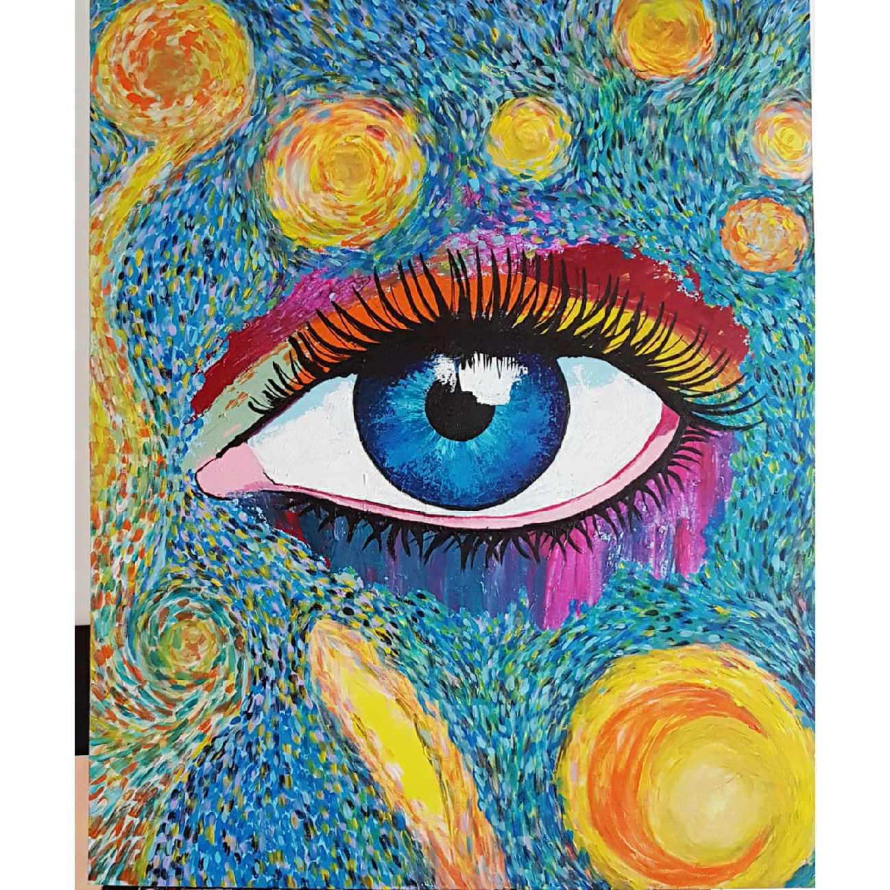
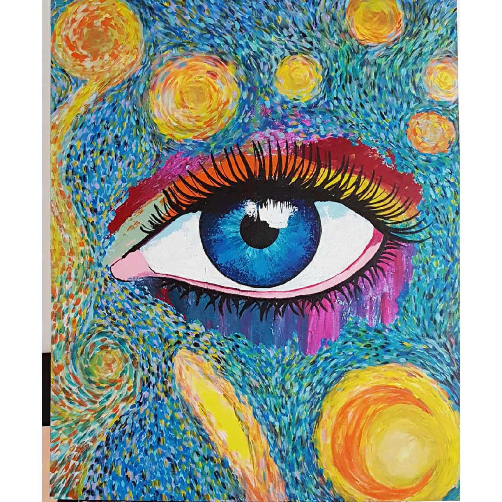

As artes desempenham um papel fundamental na sociedade, permitindo expressão, reflexão e conexão com o mundo ao nosso redor. No contexto educacional, o Exame Nacional do Ensino Médio (Enem) reconhece a importância das artes como uma área de conhecimento que contribui para a formação integral dos estudantes. Por meio da inclusão das artes no Enem, o exame busca ampliar a compreensão dos candidatos sobre essa disciplina, além de promover uma visão mais abrangente da cultura e da diversidade artística presente em nossa sociedade.
Ao incluir questões relacionadas às artes visuais, música, teatro e dança, o Enem busca avaliar não apenas o conhecimento específico sobre essas manifestações, mas também habilidades como interpretação, análise crítica e capacidade de estabelecer relações entre diferentes linguagens artísticas. Essa abordagem vai além da mera memorização de conceitos, incentivando os estudantes a desenvolverem uma visão crítica e sensível sobre as manifestações artísticas e culturais.
As questões de artes presentes no Enem podem abordar desde obras e artistas clássicos até produções contemporâneas, incluindo diferentes estilos, movimentos e contextos históricos. Além disso, podem ser explorados temas transversais, como a relação entre arte e sociedade, a diversidade cultural e a preservação do patrimônio artístico. Dessa forma, o exame busca incentivar a compreensão da arte como um elemento essencial para a construção de identidades individuais e coletivas, assim como para o desenvolvimento de uma consciência crítica e cidadã.
A inclusão das artes no Enem reflete a importância de valorizar e reconhecer o papel da cultura e da expressão artística em nossa sociedade. Ao contemplar essa área de conhecimento, o exame amplia sua abrangência, oferecendo aos estudantes a oportunidade de se envolverem com diferentes manifestações artísticas, desenvolvendo habilidades de interpretação, análise e reflexão que vão além dos limites da sala de aula. Afinal, as artes nos convidam a olhar para o mundo de maneira única e a explorar nossa própria capacidade criativa.
No Enem, as questões de artes podem abordar uma variedade de assuntos. Alguns dos principais temas que podem ser explorados incluem:
Movimentos artísticos: Questões podem envolver a compreensão e a análise de movimentos artísticos importantes, como Renascimento, Impressionismo, Cubismo, Surrealismo, entre outros. Os estudantes podem ser questionados sobre as características desses movimentos, seus principais artistas e obras representativas.
Obras de arte e artistas renomados: O Enem pode apresentar questões sobre pinturas, esculturas, fotografias ou outras formas de arte, pedindo aos estudantes que identifiquem as obras ou os artistas responsáveis por elas. Nesses casos, é importante conhecer artistas como Leonardo da Vinci, Vincent van Gogh, Pablo Picasso, Frida Kahlo, entre outros.
Contextos históricos e culturais: As questões de artes também podem abordar o contexto histórico e cultural em que as obras foram produzidas. Os estudantes podem ser questionados sobre a relação entre as manifestações artísticas e os eventos históricos, bem como a influência de determinadas culturas ou movimentos sociais nas produções artísticas.
Música e estilos musicais: O Enem pode trazer questões relacionadas à música, incluindo a análise de composições, estilos musicais e seus contextos históricos. Os estudantes podem ser solicitados a identificar estilos como o Barroco, o Romantismo, o Jazz, o Rock, entre outros, assim como seus principais compositores e características.
Teatro e dança: Embora em menor frequência, o Enem também pode abordar questões relacionadas ao teatro e à dança. Os estudantes podem ser questionados sobre peças de teatro famosas, movimentos teatrais ou estilos de dança.
É importante lembrar que a preparação para as questões de artes no Enem deve incluir a leitura de obras de referência, a familiarização com artistas e movimentos importantes, além da compreensão dos contextos históricos e culturais em que as obras foram produzidas. Além disso, desenvolver a capacidade de interpretação, análise e reflexão crítica é essencial para responder às questões com sucesso.
A inclusão das artes no Exame Nacional do Ensino Médio (Enem) é de extrema importância por diversos motivos. A seguir, destacarei algumas das razões que evidenciam a relevância das artes no Enem:
Formação integral dos estudantes: As artes desempenham um papel fundamental na formação integral dos indivíduos, contribuindo para o desenvolvimento de habilidades como criatividade, sensibilidade, expressão, pensamento crítico e apreciação estética. Ao incluir questões de artes, o Enem reconhece a necessidade de valorizar esses aspectos na educação dos estudantes.
Ampliação do repertório cultural: As artes proporcionam uma oportunidade de ampliar o repertório cultural dos estudantes, permitindo o acesso a diferentes manifestações artísticas e culturais. As questões de artes no Enem incentivam a exploração de obras de artistas renomados, movimentos artísticos e estilos diversos, promovendo uma compreensão mais abrangente da história da arte e da diversidade cultural presente em nossa sociedade.
Estímulo à sensibilidade e reflexão crítica: O Enem busca não apenas avaliar o conhecimento dos estudantes sobre as artes, mas também incentivar a sensibilidade e a reflexão crítica em relação às manifestações artísticas. Ao analisar obras de arte, os estudantes são desafiados a interpretar significados, compreender contextos históricos e culturais, além de estabelecer relações entre diferentes linguagens artísticas. Isso promove uma visão crítica e uma apreciação mais profunda das manifestações artísticas.
Conexões interdisciplinares: As questões de artes no Enem têm o potencial de estabelecer conexões com outras áreas do conhecimento, como história, literatura, sociologia, filosofia e até mesmo ciências naturais. Através da análise de obras de arte, por exemplo, podem ser explorados aspectos históricos, sociais e culturais de determinado período, favorecendo a interdisciplinaridade e uma compreensão mais ampla do mundo.
Reconhecimento da importância da cultura e da expressão artística: A inclusão das artes no Enem demonstra o reconhecimento da importância da cultura e da expressão artística em nossa sociedade. Ao valorizar as artes como uma área de conhecimento relevante, o exame contribui para a valorização da diversidade cultural, o estímulo à criatividade e a formação de cidadãos mais sensíveis e conscientes de sua identidade cultural.
Em suma, a presença das artes no Enem proporciona uma abordagem mais abrangente da educação, reconhecendo a importância da formação integral dos estudantes, a valorização da cultura, o estímulo à criatividade e o desenvolvimento de habilidades de apreciação estética e pensamento crítico. Através das questões de artes, o Enem busca ampliar a visão de mundo dos estudantes, incentivando o engajamento com a arte e suas múltiplas possibilidades de expressão.
